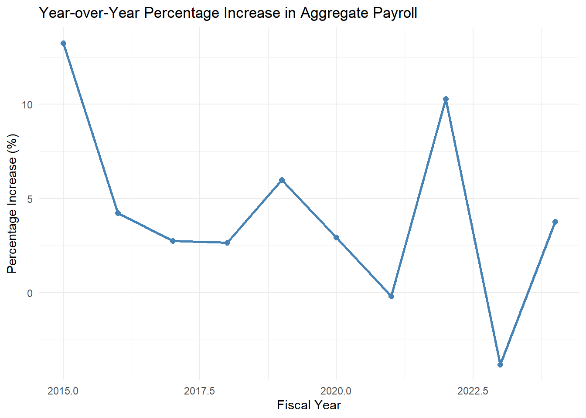

This white paper is for the analysis of New York City’s payroll data and policies that the Commission to Analyze Taxpayer Spending (CATS) have created with recommendations on how to optimize tax payer’s money more efficiently. We will be looking through two policies from CATS, analyzing if they are policies that should be adopted or not, and one additional suggested policy for CATS to adopt that will reduce expenses and city payroll. The policies we will be looking at are as follows:
Capping Salaries at Mayoral Level: This proposal from CATS is a traditional policy that is implementented in many other governments already but not yet in the city of New York. Implimenting this policy could potentially save the city money but can lead to more problems down the line.
Increasing Staffing to Reduce Overtime Expenses: This policy suggests hiring additional employees to reduce excessive overtime pay. There are many employees that work many overtime hours which leads to higher payroll costs and by hiring more employees,and overall it could reduce overtime expenses.
Adjusting Pay Based on Geographic Location: Our suggestion to CATS to effectively save city payroll is to adjust salaries based on the work location borough to reflect on living costs where some may have a higher cost of living while others have lower.
Objective
The objective for our analysis is to see how these possible policies will affect overall spending and we will do that by computing each policies impact on city payroll and determing if any staffing adjustments are required to implement the policy.
Initial Data
For the analysis, we are using the NYC Payroll Data. We first want to look at all the data provided and standardize the data to usE and see what is applicable to the questions we want to answer, and from the dataset we are able to view an example of the different columns provided. Some key variables that we want to focus on include but are not limited to fiscal_year, agency_name, title description, base_salary, total_ot_paid, regular_hours, and ot_hours.
Code
# calcuating how much payroll increases per yearpayroll_growth <- df |>group_by(fiscal_year) |>summarize(total_payroll =sum(base_salary + total_ot_paid, na.rm =TRUE)) |>arrange(fiscal_year) |>mutate(percentage_increase = (total_payroll -lag(total_payroll)) /lag(total_payroll) *100) |>drop_na(percentage_increase) #plotting of the dataggplot(payroll_growth, aes(x = fiscal_year, y = percentage_increase)) +geom_line(color ="steelblue", linewidth =1) +geom_point(color ="steelblue", size =2) +labs(title ="Year-over-Year Percentage Increase in Aggregate Payroll",x ="Fiscal Year",y ="Percentage Increase (%)") +theme_minimal()

Here we can see the changes in aggregated payroll per year, with 2015 having the biggest increase by 13% and it was common for the payroll spending to increase slowly every year. If this trend were to continue there would be too much payroll spending and the cost needs to be controlled.
We standardized the data by converting all the strings using the “str_to_title” function so only the first letter of the word is capitalized to have a more concise data table.
Code
#small dataset showing a sample of payroll datadf |>head(5)|>kable(caption ="Sample of Payroll Data")
Sample of Payroll Data
fiscal_year
payroll_number
agency_name
last_name
first_name
mid_init
agency_start_date
work_location_borough
title_description
leave_status_as_of_june_30
base_salary
pay_basis
regular_hours
regular_gross_paid
ot_hours
total_ot_paid
total_other_pay
leave_status
2024
67
Admin For Children’s Svcs
Faye Fall
Sokhna
M
2023-11-20
Bronx
Child Protective Specialist
ACTIVE
62043
per Annum
1050.00
31267.96
12.00
425.00
78.04
Active
2024
67
Admin For Children’s Svcs
Kilgore
Orlantha
B
2023-08-28
Brooklyn
Child Protective Specialist
ACTIVE
62043
per Annum
1470.00
44660.96
99.75
3859.84
78.14
Active
2024
67
Admin For Children’s Svcs
Wisdom
Cherise
M
2022-10-24
Manhattan
Community Associate
ON LEAVE
43144
per Annum
1251.50
28649.20
30.00
802.42
78.26
On Leave
2024
67
Admin For Children’s Svcs
Miller
Moya-Gaye
S
2023-02-27
Manhattan
Child Protective Specialist
ON LEAVE
62043
per Annum
1400.75
44515.43
44.75
1476.98
78.37
On Leave
2024
67
Admin For Children’s Svcs
Bradley
Yashika
M
2023-02-27
Bronx
Child Protective Specialist
CEASED
60236
per Annum
700.00
22133.64
53.00
1933.33
78.47
Ceased
Next, we will start looking at the policies and some key findings and information that CATS wanted us to provide for analysis.
Policy 1: Capping Salaries at Mayoral Level
Code
#calculating Mayor Eric Adam's salary and position each yeardf_mayor <- df |>filter(first_name =='Eric', last_name =='Adams', mid_init =='L') |>select(fiscal_year, title_description, agency_name, base_salary) |>rename('Fiscal Year'= fiscal_year,'Position'= title_description,'Agency'= agency_name,'Total Salary'= base_salary) |>group_by(`Fiscal Year`) |>summarize(`Total Salary`=sum(`Total Salary`),`Position`=paste(unique(`Position`), collapse =" / "), `Agency`=paste(unique(`Agency`), collapse =" / ") ) |>arrange(`Fiscal Year`) |>kable(caption ="Mayor's Career Path and Salary", format ="pipe")df_mayor
Mayor’s Career Path and Salary
Fiscal Year
Total Salary
Position
Agency
2014
160000
Borough President
Borough President-Brooklyn
2015
160000
Borough President
Borough President-Brooklyn
2016
179200
Borough President
Borough President-Brooklyn
2017
179200
Borough President
Borough President-Brooklyn
2018
179200
Borough President
Borough President-Brooklyn
2019
179200
Borough President
Borough President-Brooklyn
2020
179200
Borough President
Borough President-Brooklyn
2021
179200
Borough President
Borough President-Brooklyn
2022
437950
Borough President / Mayor
Borough President-Brooklyn / Office Of The Mayor
2023
258750
Mayor
Office Of The Mayor
2024
258750
Mayor
Office Of The Mayor
As you can see from the data, there was one anomaly where Mayor Eric Adams transitioned from Borough President to Mayor of New York, instead of seperating each of the salaries we decided to put them together although he may have not earned that amount total. To make it simpler to calculate everything.
Code
#Calcuating mayor salarymayor_salaries <- df |>filter(title_description =="Mayor") |>group_by(fiscal_year) |>summarize(base_salary_mayor =max(base_salary, na.rm =TRUE))#combining dataset to see which jobs have a base salary that is higher than the base of the mayordf_updated <- df |>left_join(mayor_salaries, by ="fiscal_year") |>mutate(above_mayor_salary = base_salary > base_salary_mayor)#filtering to see the top 10 employees that make more than the mayoremployees_above_mayor <- df_updated |>filter(above_mayor_salary) |>select(fiscal_year, agency_name, title_description, base_salary, base_salary_mayor)kable(head(employees_above_mayor, 10), caption ="Top 10 Employees Earning More Than the Mayor")
Top 10 Employees Earning More Than the Mayor
fiscal_year
agency_name
title_description
base_salary
base_salary_mayor
2024
Admin For Children’s Svcs
Deputy Commissioner
258866
258750
2024
Admin For Children’s Svcs
Administrative Staff Analyst
264748
258750
2024
Admin For Children’s Svcs
Assistant Commissioner For Facilities Development & Const
264746
258750
2024
Admin For Children’s Svcs
Executive Agency Counsel
264746
258750
2024
Admin For Children’s Svcs
Administrative Director Of Social Services
264835
258750
2024
Admin For Children’s Svcs
City Medical Director
264062
258750
2024
Admin For Children’s Svcs
Commissioner Of Children’s Services
277605
258750
2024
Admin For Children’s Svcs
Strategic Initiative Specialist
264746
258750
2024
Admin For Children’s Svcs
Executive Agency Counsel
264835
258750
2024
Admin For Children’s Svcs
Administrative Director Of Social Services
271810
258750
Code
#calculating amount of agencies that would be affected by the changeimpacted_agencies <- employees_above_mayor |>count(agency_name, sort =TRUE) #calculating which roles would get impacted by the changeimpacted_titles <- employees_above_mayor |>count(title_description, sort =TRUE) kable(slice_head(impacted_agencies, n =10), caption ="Top 10 Agencies with Employees Earning More Than the Mayor")
Top 10 Agencies with Employees Earning More Than the Mayor
agency_name
n
Office Of The Comptroller
65
Police Department
47
Office Of The Mayor
44
Fire Department
32
Dept Of Environment Protection
19
Admin For Children’s Svcs
15
Dept Of Ed Pedagogical
15
Office Of The Actuary
15
Technology & Innovation
15
Department Of Sanitation
13
Code
kable(slice_head(impacted_titles, n =10), caption ="Top 10 Job Titles with Employees Earning More Than the Mayor")
Top 10 Job Titles with Employees Earning More Than the Mayor
title_description
n
Administrative Staff Analyst
33
President
33
Director Of Investments
27
Deputy Commissioner
25
Executive Director
18
Executive Agency Counsel
16
Computer Systems Manager
14
First Deputy Mayor
14
Chief Actuary
13
Deputy Assistant Chief Of Department
13
Code
#seeing the total amount that would be saved if the policy were to go throughemployees_above_mayor <- employees_above_mayor |>mutate(savings = base_salary - base_salary_mayor) total_savings <-sum(employees_above_mayor$savings, na.rm =TRUE)total_people_above_mayor <-nrow(employees_above_mayor)cat("**Total Savings:**", total_savings, "\n\n")
**Total Savings:** 8958853
Code
cat("**Total People Above Mayor's Salary:**", total_people_above_mayor)
**Total People Above Mayor's Salary:** 451
For the analysis, we only focused on the base salaries of each role to compare them all to the mayors to see how many people and jobs would be affected by it. We also researched to see the top 10 employees, agencies, and titles affected by the change. The agencies that would be most affected by the policy change would be the Office of the Comptroller, Police Department, Office of the Mayor, and Fire Department and would directly affect over 400 people. According to our calculations, if the policy were to go through the total amount saved throughout all the years documented in the dataset would be $8,958,853, and it would affect 451 jobs.
Policy 1 Recommendation:
We would recommend for CATS to not go through with this policy because although it would significantly reduce payroll costs and prevent excessive overtime spending, it is not worth the risk of employee dissatisfaction which may lead to people quitting their jobs for better paying private sector jobs. Public safety agencies such as the NYPD or Fire Department may need the overtime pay to function effectively so limiting their compensation could lead to staff shortages. Instead of completely capping salaries at mayoral level, there can be a compromise where non-essential workers pay can be capped at the mayoral level while critial roles do not have that cap applied to them.
Policy 2: Increasing Staffing to Reduce Overtime Expenses
We want to find out how many more Full Time Employees (fte in the tables) would be neccesary for overtime expenses to be completely cut to be able to see the scale of the amount of overtime hours worked by employees although it will probably be unlikely that the required amount of new Full Time Employees are fulfilled.
Code
#grouping to find total overtime pay, hours, and average rate of jobsovertime_analysis <- df |>group_by(agency_name, title_description) |>summarize(total_overtime_hours =sum(ot_hours, na.rm =TRUE),total_overtime_pay =sum(total_ot_paid, na.rm =TRUE),average_hourly_rate =mean(base_salary /2080, na.rm =TRUE),.groups ="drop" ) |>mutate(required_fte =ceiling(total_overtime_hours /2080),overtime_cost = total_overtime_hours * average_hourly_rate *1.5, regular_cost = total_overtime_hours * average_hourly_rate, potential_savings = overtime_cost - regular_cost )#finding the most jobs with total overtime hours and the required amount of new full time employees for the policy to workovertime_fte_analysis <- df |>group_by(agency_name, title_description) |>summarize(total_overtime_hours =sum(ot_hours, na.rm =TRUE),.groups ="drop" ) |>mutate(required_fte =ceiling(total_overtime_hours /2080) ) |>arrange(desc(total_overtime_hours))kable(head(overtime_fte_analysis, 10), caption ="Top 10 Job Titles by Overtime FTE Analysis")
Top 10 Job Titles by Overtime FTE Analysis
agency_name
title_description
total_overtime_hours
required_fte
Police Department
Police Officer
60270018
28976
Fire Department
Firefighter
43536213
20931
Department Of Correction
Correction Officer
34092745
16391
Department Of Sanitation
Sanitation Worker
23098266
11105
Police Department
P.o. Da Det Gr3
15622342
7511
Police Department
School Safety Agent
14982551
7204
Nyc Housing Authority
Caretaker
9439229
4539
Police Department
Sergeant-
8251354
3967
Fire Department
Lieutenant
7607797
3658
Police Department
Traffic Enforcement Agent
6913560
3324
Code
#calcuating potential savings from each department and how many people would be neededagency_savings <- overtime_analysis |>group_by(agency_name) |>summarize(total_potential_savings =sum(potential_savings, na.rm =TRUE),total_required_fte =sum(required_fte, na.rm =TRUE),.groups ="drop" ) |>arrange(desc(total_potential_savings))kable(head(agency_savings, 10), caption ="Top 10 Agencies by Potential Savings")
Top 10 Agencies by Potential Savings
agency_name
total_potential_savings
total_required_fte
Police Department
2589731595
68333
Fire Department
1333482940
34860
Department Of Correction
741593209
20810
Department Of Sanitation
535014906
15232
Nyc Housing Authority
172575977
12698
Hra/Dept Of Social Services
171591017
6721
Admin For Children’s Svcs
148044480
5113
Department Of Transportation
126130646
6287
Dept Of Environment Protection
78524051
4462
Dept. Of Homeless Services
51569931
2340
The main focus of policy 2 is on staffing and overtime hours, so we analyzed which agencies and roles have the most overtime, unsurprisingly it is the NYPD and Fire Department because their jobs require them to be prepared to work at any moment. Although the potential savings are high, it would be difficult for every missing job to be filled. Policy 2 Recommendation
We believe that this policy is not very feasible because of the sheer number new full time employees are needed for certain jobs. Just Police Officers themselves worked over 60,000,000 hours of overtime, and that would require almost 30,000 new full time Police Officers if they wanted to cut overtime expenses totally out from that title. We would recommend limiting the amount of overtime hours an employee can have, with a maximum of 10% of their regular hours. Excess hours will not be paid as overtime but as regular hours. Another suggestion is increasing staffing in smaller agencies and roles first and continually monitor it to see how much payroll is saved and scale it if it is successful.
Policy 3: Adjusting Pay Based on Geographic Location
To analyze our suggestion to CATS, we looked at only 4 boroughs which were Manhattan, Brooklyn, Queens, and Bronx because the dataset did not have Staten Island in it. Through our analysis we are comparing salaries across boroughs and estimating savings by reducing salaries in lower-cost areas.
Code
#consolidating data to only the 4 boroughsnyc_boroughs <-c("Manhattan", "Brooklyn", "Queens", "Bronx")nyc_data <- df |>filter(work_location_borough %in% nyc_boroughs)#finding the average salary per boroughborough_salary_nyc <- nyc_data |>group_by(work_location_borough) |>summarize(avg_base_salary =mean(base_salary, na.rm =TRUE), .groups ='drop')kable(borough_salary_nyc, caption ="Average Base Salary for NYC Boroughs")
#adjusteding salaries by lowering it by 10% if it was not in the lowest cost boroughadjusted_salaries <- nyc_data |>left_join(borough_salary_nyc, by ="work_location_borough") |>mutate(adjusted_salary =ifelse( work_location_borough != lowest_cost_borough, base_salary *0.9, base_salary ),#calculating salary reductionssalary_reduction =pmax(0, base_salary - adjusted_salary) )#calculating total savings from the reductionstotal_savings <-sum(adjusted_salaries$salary_reduction, na.rm =TRUE)paste("Total Potential Savings by Adjusting Salaries:", dollar(total_savings))
[1] "Total Potential Savings by Adjusting Salaries: $7,793,789,406"
Policy 3 Recommendation
As we can see from the analysis, since Manhattan is the lowest cost borough by a massive amount so they do not get a reduction in salary while the other 3 boroughs get a reduction. We decided that the reduction would be 10% of their base salaries and it would be almost $8,000,000 in potential savings if the policy were to go through. This change would be beneficial for CATS as they are looking to cut payroll costs.
Conclusion
Overall based on our analysis of the payroll data, New York City’s payroll policies need some sort of reform to cut costs but also needs to be balanced to keep employee retention high. Capping salaries at the mayoral level may have the potential of losing highly skilled employees in their respective fields. Increasing staff is difficult to do when overtime plays a big role in some of these jobs and it is not possible to fill in all the overtime hours with new full time employees. Adjusting pay based on the borough allows for fair compensation aligning with different costs of living. To cut down on payroll spending and optimize the taxpayer’s money we recommend a hybrid combination of the recommendations to maintain financial sustanability in New York city.